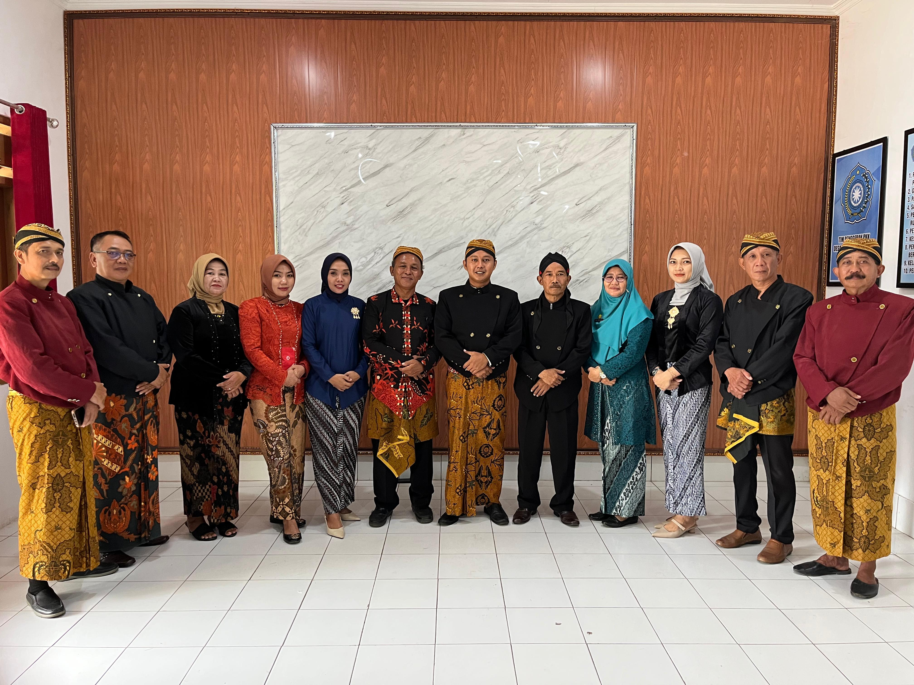

Desa Mlokomanis Wetan
Kecamatan Ngadirojo • Kabupaten Wonogiri • Jawa Tengah
Selamat datang di Website Resmi Desa Mlokomanis Wetan. Temukan informasi desa, pelayanan administrasi, potensi wilayah, serta informasi terbaru secara mudah, cepat, dan transparan.